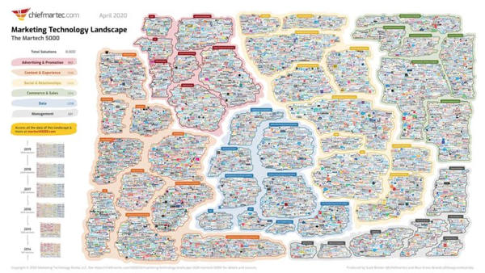
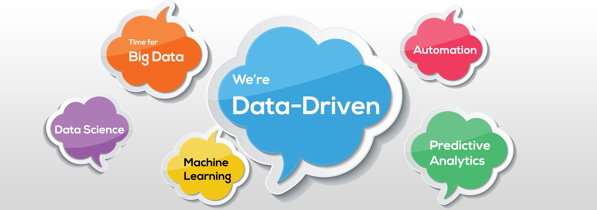

Tiếp thị theo hướng dữ liệu đang trên đà trở thành “điều quan trọng tiếp theo” trong B2B. Điều đó tốt, vì nó hoạt động!
Nhưng bạn không cần phải tin lời chúng tôi. Nguyên tắc cơ bản của tiếp thị theo hướng dữ liệu là dữ liệu của bạn phải tự nói lên - miễn là bạn có các công cụ và hệ thống để lắng nghe nó.
Tất nhiên, việc quyết định những công cụ và hệ thống nào sẽ được thực hiện. Do đó, trước khi bắt đầu, bạn nên biết một số thông tin nền tảng cơ bản về tiếp thị theo hướng dữ liệu là gì và tại sao nó tạo ra kết quả kinh doanh. Đây là cách nó hoạt động.
Khi nói đến các lý thuyết tiếp thị có bức tranh lớn, hoặc bất kỳ lý thuyết kinh doanh nào cho vấn đề đó, hầu hết những người ra quyết định đều thích gắn bó với những gì đã được chứng minh là hoạt động trong một khoảng thời gian trước đây. (Hoặc họ có thời gian và nguồn lực để chờ đợi một lý thuyết mới sẽ ra mắt trong tương lai. Bạn có thể không rơi vào trường hợp đó!)
Ngày nay, một trong những lý thuyết tiếp thị được tôn trọng này liên quan đến việc lấy khách hàng làm trung tâm, trong đó các tổ chức thiết kế chiến lược của họ xung quanh việc xác định và tạo ra giá trị cho những khách hàng tốt nhất của họ. Ý tưởng cơ bản đã có từ những năm 1970, khi các nhà tiếp thị nhận ra rằng khách hàng của họ không phải lúc nào cũng mua một sản phẩm hoặc dịch vụ đơn giản chỉ vì nó tồn tại.

Vì vậy, lấy khách hàng làm trung tâm không phải là điều mới mẻ. Điểm mới là trong vài năm qua, lượng dữ liệu có sẵn về khách hàng đã bùng nổ. Dữ liệu này có thể thúc đẩy các nỗ lực tiếp thị lấy khách hàng làm trung tâm. Nhập tiếp thị theo hướng dữ liệu. Chính sự kết hợp giữa lý thuyết đã được kiểm tra thời gian và dữ liệu mới có sẵn này đã làm cho nó trở nên hiệu quả.
Dữ liệu: Khách hàng ngày nay tạo ra số lượng lớn dữ liệu ý định
Một vài năm trước, khách hàng B2B đã nghiên cứu các giao dịch mua tiềm năng với một nhân viên bán hàng. Ngày nay, họ làm tất cả trực tuyến. Chẳng hạn, họ đọc các bài đánh giá, duyệt các bài đăng trên blog, tham dự hội thảo trên web và tải xuống các báo cáo chính thức khi họ chuyển hướng kỹ thuật số của mình đến một đợt bán hàng cuối cùng. Tất cả hoạt động trực tuyến đó tạo ra dữ liệu ý định báo hiệu một đợt bán hàng trong tương lai.
Tất nhiên, sự tồn tại của dữ liệu ý định đó là điều làm cho khả năng tiếp thị theo hướng dữ liệu. Mức độ thông tin về hành vi của khách hàng tiềm năng chưa từng tồn tại ở bất kỳ thời điểm nào trước đây trong lịch sử tiếp thị. Ví dụ, hãy tưởng tượng một lợi thế to lớn mà một nhà tiếp thị sinh năm 1990 có thể biết - mọi lúc - tần suất và bao lâu một khách hàng tiềm năng nói chuyện với nhân viên bán hàng của đối thủ cạnh tranh.
Hôm nay, bạn có thể tận dụng những lợi thế trước đây không thể tưởng tượng được như thế mỗi ngày. Đó là bởi vì thay vì sử dụng điện thoại để lấy thông tin từ nhân viên bán hàng, khách hàng tiềm năng đang sử dụng máy tính để tìm thông tin đó trên Internet (và để lại dấu vết của dữ liệu trong quá trình này).
Động lực: làm cho dữ liệu có thể hành động được
Tuy nhiên, để tận dụng những lợi thế này, tất cả dữ liệu ý định này phải được xác định, sắp xếp và có thể sử dụng được.
Các nhà tiếp thị thực hiện đúng quy trình này sẽ phát triển mạnh mẽ khi hình thức Dữ liệu lớn mới mạnh mẽ này tiếp tục trở nên Lớn hơn. Các nhà tiếp thị không bỏ lỡ cơ hội.
Tiếp thị: liên tục cải thiện lấy khách hàng làm trung tâm

Khi bạn có dữ liệu phù hợp, bạn có thể hành động dựa trên dữ liệu đó bằng cách điều chỉnh các chiến lược và chiến dịch lấy khách hàng làm trung tâm xung quanh dữ liệu đó. Dữ liệu cung cấp thông tin chi tiết về điều gì hiệu quả (và điều gì không) cho một khách hàng hoặc nhóm khách hàng nhất định và bạn có thể phản hồi tương ứng.
Ví dụ: nếu dữ liệu ý định báo hiệu rằng một trong các công ty khách hàng tiềm năng của bạn quan tâm đến một sản phẩm nhất định của bạn, bạn có thể chuẩn bị nội dung khác biệt giữa kênh mà bạn biết là sẽ hiệu quả nhất cho khách hàng tiềm năng đó và cung cấp nội dung đó cho họ.
Hoạt động trực tuyến xung quanh nội dung đó sau đó sẽ báo hiệu liệu nội dung đó có giá trị đối với khách hàng trong quá trình bán hàng cuối cùng hay không - hay không. Sau đó, bạn có thể điều chỉnh chiến lược nội dung của mình dựa trên kết quả, ngay cả sau lần bán hàng đầu tiên khi bạn muốn làm sâu sắc thêm mối quan hệ với khách hàng.
Và bạn đã có nó: tóm lại là tiếp thị theo hướng dữ liệu. Kết luận mà chúng tôi khuyên bạn nên đưa ra (và kết luận mà chúng tôi đã thực hiện, trên thực tế, khi chúng tôi thiết kế Insight Base) là bạn nên tập trung vào khía cạnh “thúc đẩy” của tiếp thị theo hướng dữ liệu. Đó là nơi bạn sẽ tạo ra sự khác biệt.
Dữ liệu lớn là một xu hướng toàn cầu diễn ra có hoặc không có bạn và dữ liệu ý định là biểu hiện mới hữu ích nhất cho các nhà tiếp thị B2B. Tuy nhiên, cách bạn thúc đẩy sự kết hợp của hai khái niệm cho doanh nghiệp của mình sẽ đóng một vai trò quan trọng trong thành công của bạn trong thế kỷ 21.